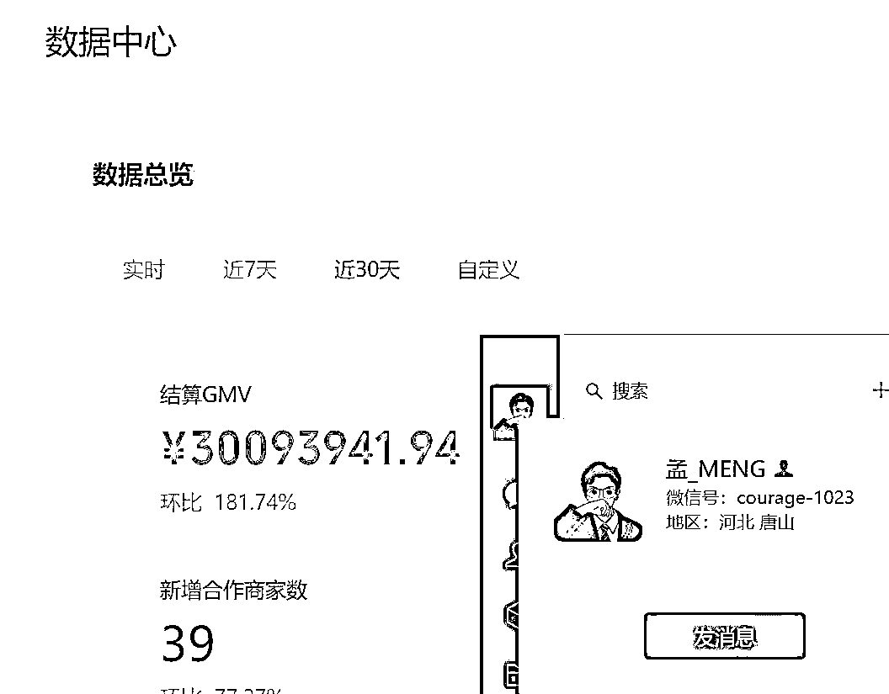
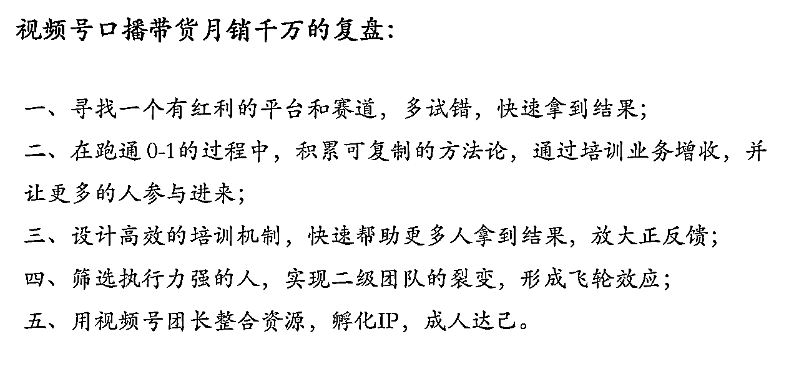

来源：https://rxc7lnelf7.feishu.cn/docx/FnIjd8b8cocPrDxfKkccU1Nmndb
生财圈友们好，我是孟_MENG，我们团队从23年9月份开始入局视频号带货，从最开始的搬运剪辑，到后来进入视频号素人IP口播带货赛道，至今做到了月销数千万，孵化了1000+口播达人，是视频号带货团长榜单第一名。
有不少圈友看了我分享的精华帖《视频号口播带货爆单14w像素级拆解》，入局素人IP口播带货这个赛道，拿到不错的结果，也有不少圈友成为了我们团队的达人，能做到现在这个规模，受到了生财有术和圈友们的莫大帮助。
今天就和大家分享一下，从普通人视角看到的视频号的前景，团队模式的潜力，以及我们如何是从0-1，十倍增长，做到月销数千万的，也和大家敞开心扉聊聊这个项目的现状，和我们从未公开讲过的劣势，请各位圈友不吝指正！
废话不多说，先上一波数据展示，佐证我下面分享的文字，都是一步一步干出来的，不是天马行空。

我认为我们团队能在视频号取得成绩，主要是做对了下面三件事：
1、做对战略，选择有红利的平台深耕
2、快速跑通，初步用培训的方式放大
3、扩张裂变，成立二级团队，实现月销数千万。
下面我给大家一条条展开讲。
能拿到现在这个结果，我不觉得是我和团队自身非常厉害，只是因为我们入局的时间早，发现“异常值”，快准狠抓住了平台红利。
现在视频号素人IP口播带货的特点是：
在目前这个阶段属于平台的野蛮发展期，需要我们这帮先锋者去冲量，来帮平台给用户去打上电商标签，加速平台商业化，给后面进场的专业玩家铺路。
普通人出镜念稿并不需要多专业的表现力就能爆单，而且就算新手不掌握实拍能力，也可以通过他人的出镜素材来快速跑通0-1。不会直播，没有时间直播等可以通过连麦方式代播。
真人出镜的带货视频更受用户喜爱，通过真人出镜的方式拉近与用户的距离，让用户有亲切感，信任感，大大提高了视频的互动率和下单转化率。
查理芒格说过，如果你想容易钓到鱼，就必须去鱼多的地方。
赚钱也是一个道理，想赚大钱，就要去有红利的平台、有红利的赛道，咱们创业者是来赚钱拿结果的，而不是为了上难度刁难自己的。所以做对战略方向的选择，往往是成功的第一步。
做视频号素人IP口播带货，其实主要搞定5个环节，就算跑通 0-1，能赚钱了。
1、做好选品
2、写好文案
3、做好素材拍摄
4、做好视频剪辑
5、做好直播带货
视频号素人IP口播带货，我上一篇帖子已经分享过了，星球里也有很多圈友都分享了，这篇帖子主要聊项目的放大，特别细节的执行问题我这里就不赘述了。这块内容，我们就主要讲些方法论和一些注意的要点。
爆品不是凭空想出来的，而是被市场验证出来的。
我从业以来一直践行一个原则：同行最好的老师，同行能爆的，我也能爆。
我们团队内部又把同行分成，外部同行：抖音快手淘宝拼多多等平台，内部同行：视频号广场上每天能刷到的正在爆单的同行。
外部同行我就以我们团队擅长的拼多多视频举例，定人群定需求测产品，发现效果出奇得好，带着原先做多多视频营收千万的经验剖析，原来多多视频的人群和视频号的人群是极其相似的，有不少中老年用户，更喜欢新奇特产品，那我每天就会在爆款榜单里面去找【新奇特】的产品。
具体操作方法就是打开拼多多首页查看对应的类目的每日的热销排行榜。
像我们团队一般会优先选择家清百货，因为他的佣金高，需求也足够大，所以下单转化率也高。
比如我们冬天带爆的一款羽绒服干洗剂，就是一款在拼多多榜单里面找到的新奇特产品，以往用户换季想去清洗羽绒服都要拿到干洗店去洗，干洗店一件就是几十上百。
但买了我们这个产品，自己在家就可以进行清洗，花十几块钱就可以洗全家羽绒服，抓住了用户的需求和省钱心理，价格比干洗店便宜，实用性很强，直切用户痛点，一卖就爆。
大家还可以发现，这款羽绒服干洗剂在拼多多只卖几块钱，但是拿到视频号就要做高溢价，我们视频号卖的是19.9，视频号的用户没有被传统电商平台洗过，所以对价格不敏感，我们能拿到的佣金自然也就更高。

第二类同行，就是视频号内部同行，也就是视频号广场上正在爆单的直播间，平时多刷广场看同行爆单的产品，能否用真人口播的内容形式去带货。
总之做视频号带货选品就一个宗旨，选品不能光看数据，还要看能不能真正解决用户的需求！
产出优质口播带货文案的三板斧：抄，改，套
刷到同行的爆款视频，把视频下载下来，然后用微信小程序（语音转文字）去提取文字，复制出来就好了，直接抄同行的爆款文案过来拍，同行就是最好的老师。

改文案就是用自己的话，把文案复述一遍，新增一些语气词，留一些气口，达到一个去重的效果。
一边熟悉文案，一边代入文案的身份人设，一边培养对文案的感知。
改文案的几个要点：
新手刚入局，直接就先去抄，抄的多了，收集了足够多的口播文案，培养对爆单文案的感知。
逐渐建立自己的【口播文案库】，拆解文案的爆点，把爆点进行拼接，就可以把A品的文案套到B品上。
比如都是清洁功效型产品，都是用来清洁衣物污渍的，那衣物漂白剂和羽绒服清洗剂的文案就可以互相拆解套用。
做真人口播带货，最重要的一步是开始去拍，而不是纠结拍的好不好和设备问题。
拍摄器材最开始不要太复杂，前期一个日常使用的手机，一个拍摄支架就够用了，不建议大家直接去购买太贵或太专业设备拍摄，弄起来麻烦，还不如用手机高效。
牢记一个朴素的道理：先完成，再完美！
下面这条视频为例，就是我团队一个70后宝妈达人，拿着一个手机对着人脸就开拍，没有任何专业设备，大家猜猜卖了多少？
我来揭晓谜底，这条素材卖了7万多成交额，最高单条实拍播放量653万，经过多次去重发布总播放量达到1000w，带的产品就是前面提到的羽绒服干洗剂，60%佣金到手有4w💰
新手一开始拍可能会有一些镜头恐惧或者说不自然，大家可能以为我要传授什么技巧，其实没有，就是多拍，人在事上练，铁杵磨成针，多拍视频就自然就好了，多练习几次。多看一些优秀的作品，拆解优秀作品的爆点，多看+多拍，慢慢的就会找到适合自己的感觉。
很简单。
拍好的视频素材导入到剪映里面，识别口播文案的字幕，开头＋黄金3秒，视频中间根据用户痛点、使用场景、产品实拍等插入对应镜头，足矣。
现阶段做真人口播带货不用扣那么多细节，更不用加那些浮夸的特效，视频只要做到60分就够用了。
要的就是和视频号哥哥姐姐的这种亲切感，就像邻里邻居，唠八卦唠家常的感觉。
视频剪辑好发布上去之后，一般到1000播放，每分钟有2个点赞，我们就会直接开播，不需要去请专业的主播，找兼职主播通过连麦代播的方式去承接你的直播就可以了。
比如：我账号本人在广东，我在直播间发起连麦，然后主播他可能在山东在杭州等地方接入我的连麦就可以把画面切到主播那边，兼职主播来进行直播带货，挂的还是我账号本人的链接。
一般说到扩大项目收益，大家往往会想到，用培训招生或扩大自营的模式，去扩张。
那扩大自营就要面临着，人员，场地，设备，账号，管理等等成本，又要面临扩大后平台规则变化，玩法升级等潜在风险，我们团队又刚好不擅长，于是就选择了培训招生，招来的达人全部来跟我们团队已经测爆的产品。
我的视频爆了，每次都会被一堆同行搬运抄袭、跟品，我心想：我辛辛苦苦测出一个爆品，一个爆款素材，与其便宜了同行，那还不如我招学员来，我自己抄自己好了，让学员成为我的打品达人，批量分发我的爆款素材，实现共同富裕。
这也是我这个项目做培训的初衷，为了肥水不流外人田，而不是单纯搞培训割韭菜收个学费。
于是，我搞起了培训。不过，搞视频号培训的人多了去了，但真正做大的并不多。
下面和大家分享一下，我们团队是做培训的思路和方式是怎样的，我们比同行优秀的点在哪里？
为什么一提到搞培训的大家这么诟病，都骂韭菜的，市面上有部分同行搞培训，只想着一次性赚个培训费，而不想着怎么样提高学员的成才率，也就更没有后端带来的被动收益了。
而我们团队做培训是为了，把我们测出来的爆品利润放到最大，让学员使用我们提供的爆品供应链，我们来赚取供应链的服务费返点，所以会更注重提高学员的成才率，真正让学员去变现，来获取我们后端的收益。
为了和学员深度绑定，走得更远赚未来的钱，我们团队选择把收益的最重要的来源，放在后端供应链上面，通过扩大团队的规模和团队 GMV总量，和来供应链争取更高的带货佣金+ 额外返点，而不是通过增加培训费和压榨达人的佣金来争取收益。
因此，对我们来说，降低培训价格，增加学员人数，提高学员成才率，才是增加收益的核心。所以在市场上，视频号口播带货的培训费，3980，6980 的，比比皆是的情况下，我们团队选择了一个中下水平的价格，培训只收 2980。
通过一个中规中矩的门槛，筛选出一批有执行力的达人来跟着我打品。
通过降低培训价格，帮助学员快速拿结果，扩大团队影响力的方式，收了1000多个学员进团队。当我收了这么多学员进来，学员之间的水平肯定是参差不齐的，那如何才能保证爆品出来，学员能够马上跟上，那就需要通过优化培训和协作的方式来提高学员的人效。
大部分做培训的同行，去带学员做视频号的常规做法，一般是带学员跑通独立闭环。让学员学会：找供应链做商务沟通、选品、文案、拍摄、剪辑、直播带货... 这十八般武艺。
这种做法的好处，确实大大提升学员个人能力，让学员具备带货达人完整的技能，具备独立赚钱的能力。但坏处就是，效率降低，难度加大，成材率变低，想要让学员真正能把各环节打通，从而赚到钱的，需要耗费大量的时间，而互联网的今天，平台红利是在一分一秒流逝的，我耗不起！
投资大咖沈南鹏说过：在互联网新型经济下，所面临的环境瞬息万变，竞争不再是大鱼吃小鱼，而是快鱼吃慢鱼，大公司不一定打败小公司，但是快的一定会打败慢的。
所以让每个学员去做自己擅长的事情，大家分工协作，才是提高效率和产出的最优解法。
那我们具体是怎么做的？
1、由团队，作为学员们的中台，帮大家去谈供应链、拿样品、谈高佣，测爆品。
2、开发一套机制，帮学员监测市场上的爆品、爆款视频，及时同步给学员，让学员第一时间能跟品、翻拍
3、已经跑通0~1的学员，可以进阶为实拍达人，团队会给到文案，让实拍达人来拍摄
4、实拍达人自己的出镜视频爆了，可以共享到团队里，让团队学员一起来打这个爆款素材，出镜达人拿一定的分佣比例。
经过一段时间的发展，现在已经进阶到2.0的培训模型：
团队作为中台选品写文案，已经掌握出镜能力的达人，负责拍素材测爆品。
未掌握出镜能力的达人，就直接拿着团队的爆款素材去剪辑发布，挂上团队提供的高佣链接，不仅可以给出镜人分润，团队还能赚取供应链的返点。
培养掌握出镜能力的学员逐步往垂直达人号方向发展，成为真正的素人带货IP。
帮助掌握矩阵打品能力的学员，组建线下小工作室，找附近的同学分工合作，成为抗风险能力更强的带货工作室。
至此达成一个闭环，团队1000位学员紧密合作，大家各司其职，各负成本，共担风险，这让我们团队的效率和氛围，大大的提升。
即使偶尔遇到平台的规则变动，也能做到快速升级到下一个玩法，穿越项目的周期。
出镜达人，打品达人，团队，实现三方共赢。
因为我们的视频是靠自然流的，那在视频内容上面就要千方百计的去获取平台的流量，文案上面就会有一点擦边，账号的存活期不会太久，大爆过后就很容易违规死号，1000个学员没办法源源不断的铺号。
但是让学员直接去买号或者租号，也会产生不小的成本，沟通起来浪费时间，效率也很低。
假如一个学员通过找亲戚朋友，或各种方式能搞来10个账号，那我们团队要是有2000个3000个学员呢？
但是团队自己去招学员搞培训，我们创始团队的精力不足，怕交付做不好，为了有源源不断的账号供给，我们团队选择建立二级团队，从1000位达人里面筛选，具备一定运营能力的学员来孵化，把我们的培训资料授权给他们，让他们自己去带学员，成为我们的二级团队，
只要手上的达人数量够多，走的是团队的供应链。那么，哪怕给达人的佣金高一些，我们抽的服务费少一些，都是没关系的。 因为当团队月GMV能干到大几千w，哪怕只赚取几个点的供应链返点，月收益也非常的可观了！
通过建立二级团队的方式，我们快速的把每日开播账号从500个拉到了1000个以上，日销从50w突破到百万，全体业绩实现了翻番，形成了飞轮效应，团队规模的增长，促使拿到的佣金更高，吸引了更多的外部达人和学员的加入。

至于二级团队是去收培训费呢，还是找kol合作，免费培训后端抽佣都无所谓，我们不用多花精力交付，我们的目的是把规模做大，吸引更多的素人加入，筛选出来一批有执行力，敢想敢拼的人才，带着他们不断穿越项目周期，在视频号立住脚跟，再从这批人里面筛选出有潜力的出镜人孵化为垂直细分赛道的IP。
我就是草根出身，扎根互联网这几年，我深知互联网的尽头是电商，电商的尽头是品牌或者ip，但普通人想成长为大ip，何其艰难，我倒不如选择一个有红利的平台深耕下去，带着手下这帮精兵强将不断打怪升级，再去探索孵化垂直细分赛道的小ip。
微信之父张小龙有一句名言：“再小的个体，都会有自己的品牌”，所以我坚信在微信生态里，做视频号素人IP的成功机会会更大！
前面我说到了，做视频号口播带货，视频爆了之后，就要立马开直播带货了。
但在实际操作过程中，会有一些问题，比如：
视频爆了，但是号主本人自己没空播；
或者号主自己不擅长做直播，转化率不高；
或者达人多个账号，多个视频都爆了，就算能直播，也不能同时开播，分身乏术呀...
那咋办？眼睁睁的沿着钱从眼前溜走嘛？ 肯定不可能。
所以团队意识到，发展出 1000+达人之后，我们必须发展出配套的千人代播团队，才能进一步的，稳定的放大规模！
前面我讲到了视频号，目前是可以通过连麦代播的形式去直播的，那意味着招募的只都是线上主播就可以了，不需要承担线下人工和场地的成本。
略过中间探索，测算市场的过程，直接和大家讲我们发展到现在，正在使用的模式吧。
在价格上，目前我们收费：白天35元/小时，凌晨后45元/小时，我们给主播的是20元-30元。
我们的利润能有十几块钱，但得养幕后的十几位调度助理及各岗位工作人员，实际到团队手上利润就没剩多少了，但我们看重的是这1000个达人和2000个主播背后更大的增长空间，这是未来我们升级内容形式，测试新打法，去筛选孵化垂直细分赛道IP的坚实后盾。
招募主播的过程还是比较繁琐的，要想成为正式接单的主播，需要经过
1）面试
2）复试
3）实习
4）最后进入接单群；
复试阶段还需要准备至少3-5个样品，直播话术是必须脱稿的，有的新主播在这里可能就会畏难，卡住，放弃，所以招募阶段，需要不断的鼓励引导她们去面试接单。
我们深知，不是所有人经过培训，都能取得成绩的。 成年人，筛选大于培养。
所以我们是这样操作的：
1、因为我们前期不向主播收取任何费用，所以招募阶段，我们是没有培训的。
2、我们只给资料教程，要求主播自己去熟悉话术，自己突破心理障碍面试，复试。
3、通过这些流程筛选出主动学习，主动要求上进的，这样进入接单群后，团队再安排培训。
这样操作，效果就会比不筛选，直接培训的效果，省心省力很多。
同时，进入接单群也不是一劳永逸，我们会分群筛选，优秀的进1群，犯错误的再降群进 2 群3群，这样反复反复筛选，1群2群的主播质量就会越来越优质，3群的则需要重新复试再进入接单群。
我们要人才就必须得大量的筛选，培训主要针对几个方面，最重要的一点是团队的节奏，从不内耗，明确上下播的规则 ，与调度助理高效配合。
遇到做错的地方，对事不对人，前期把这个团队的风格反复强调明确，减少内耗和管理成本。
培训第二方面，针对主播人、货、场的优化，镜头前的画面感整体调整，整洁好看赏心悦目是关键，其次就是话术，节奏感，直播间刚开如何快速热卖？人多的时候怎么说？人少的时候怎么说？下单多但是付款的少怎么办？遇到各种问题互动怎么答？也经过了多重迭代
1.0版本，最初的有主播在播就可以，样品打印的也行
2.0版本，所有主播必须有实物样品，且人货场要好看
3.0版本，所有主播不仅要节奏感好，还要会引导销售，引导高客单价
4.0版本，随着平台对于连麦有一定的风险，现在己经逐步开始电脑直播
我们招募的主播大部分都是通过我们以前团队做多多视频的这群达人去做拓展裂变的，所以这些主播都是小县城的宝妈居多，在家有一份额外的兼职赚点钱就很开心了，解决了团队缺主播的问题啊，也给这群宝妈们提供了一个就业机会，让他们不用在手心向上，有了一丝生活的底气，这也符合我们的共产主义嘛，先富带动后富。
代播这个工作，是24小时必须要有人无缝对接的，外对打品的达人，内对主播，中间就必须要有助理调度。
现在的幕后调度团队，4位调度助理每人6小时，2位主管每人12小时，基本实现了每个班次都有两位助理同时在线调度配合打品达人的各种需求。经过这样不断的优化调整，代播团队的服务一直是遥遥领先。
那我们是如何发展出一支2000人的代播团队。
其实就是抓住平台红利期，让达人快速拿到正反馈，我们刚开始入局项目的时候，一个爆款的素材，只要经过简单去重发上去，基本都能爆单，开一场就是几千佣金，我们团队就是抓住平台野蛮生长期，这样跟着我们打品的这群达人尝到了甜头，所以他们即使经过后面平台规则不断变化，也愿意跟着我们不断克服困难去铺更多的矩阵账号，也就产生了更多的代播需求。
要想维系着这么多的兼职主播，你得让她每天有活干，否则这些兼职主播就会流失。没有这么多兼职主播，那么账号视频爆的时候就无法有人直播，就无法进行转化。所以，这就需要你有很大量的账号，能够随时支撑这些主播的工作量。
因为这半年多的积累，我团队已孵化了有1000个通过培训方式招来的无底薪达人，每天后台至少有1000个账号开播。在平台红利期阶段，通过老带新的方式（也就是剪辑团队提供的爆款素材），让达人快速拿到了正反馈，这群达人的粘性很强，平均每个达人一天就能开一个直播间，都是能留下来长期稳定干活的。
假如你现在拉500人，最后只有几十人留下来干活，没啥意义，根本无法养这么多的主播。
老带新的方式，对于留下新学员，让新学员渡过新手成长期有很大的帮助，因为可以尽早让学员看到钱，哪怕是很少的钱。而如果你在本地请主播，要是账号一天有个几万播放，十万播放也无法去直播，哪怕你请的是兼职主播，都有可能会亏。
今天的分享，主要想告诉大家，赚大钱的底层逻辑很朴素：

以上方向正确，方法正确，拿到大结果就是十拿九稳的事了！
1、利润率
目前项目的整体利润还是偏低，在市场越来越卷的情况下，我们需要给学员不断的去提高佣金，来保证学员有钱赚。 这导致，我们所赚取的服务费不能超过3%，在行业里是非常低的了。
目前我们了解到，市场上有同行能做到向学员抽取30%的利润分成作为服务费，这笔钱也不全是同行自己拿走，而是拿出一部分，作为团队的服务成本，用于给高质量的学员提供个性化服务，这种方式是我们应该学习的。
2、用人和管理
我们团队没有线下自营打品工作室的经验，对于招聘、签合同、薪酬绩效和激励这块的认知较少，在遇到红利项目的时候，没办法大批量做自营矩阵，包括一些特别细节的操作，需要线下面对面授课才能解决的，这块也是缺乏经验。
3、创始人时间精力不足
目前创始团队的几个合伙人24小时都在扑在这个项目里面，没有时间去思考新的方向和更大的未来，我们深知这是严重的缺陷。所以，这块我们欢迎，擅长做交付的伙伴加入，让我们创始人能从具体的事务中逐渐抽身出来。
今年视频号是值得期待的一年，从过去两年看，我们发现前三大短视频媒体平台，只有视频号的体量在保持高位增长。
当然光讲体量对普通人来说太远了，我分享一个最近的消息，微信电商团队400人全遣散，创始人张小龙亲自下场重组电商团队。
当平台的组织架构还在调整的时候，就是普通人赚钱的机会。
当平台的组织架构完整，人员体系完善，规则清晰明了，就是专业级玩家进场了，跟普通人就没什么关系了。
抖音有一个牛逼的团队，就是跟我们一样团队模式，通过前端招收素人来培训，孵化达人的方式来做团长，他们的月GMV达到了三个亿以上，拥有10+万达人，是抖音的头部mcn机构和团长。
视频号同样存在这样的机会，市场足够大，所以我分享我们团队的模式，也不怕有同行一起卷，我反而希望更多人进来完善平台生态，一起把蛋糕做大。
1、随着入局的同行越来越多，平台开始管控当前的内容形式，单纯的0粉起号口播带货更容易违规了，账号爆量期最长不会超过半个月。
2、平台开始管控单个出镜人素材批量去重铺矩阵，单个出镜人的素材出现在多个视频号上，会受到平台的出镜人验证，但这个验证是过不去的，从总个微信生态来看，视频号的理念是更希望做到平权和普惠，这也是为什么抖音上大火的IP切片分发在视频号上做不起来的原因，视频号是为了让创造价值的人能够被看见，获得该有的回报，而不是像我们这样批量矩阵去打，压榨普通人的展现空间，破坏平台生态。
3、市场上开始出现，垂直内容IP带货账号，目前看到最值得抄作业的案例有：“素人深耕内容2个月，几乎0变现，但最近他有一条素材爆了130w变现80w佣金，是一个讲中国传统文化生肖的账号”，需要先给平台用户提供内容，一般是先发几十条垂直赛道的内容视频不带货，账号养到有一定权重之后，才开始发带货视频，变现周期变得更长。
答案是：平台规则有所调整，对普通人而言，增加了起步的难度，但一定程度上降低了大玩家对普通人的挤压程度。
文章到这就结束了，我的小成就和圈内很多大佬相比根本不算什么，但是我相信，越努力越幸运，脚踏实地，提升自己，等风来。我是孟_MENG，一个“短期项目长期做”的00后创业者。
其实不管是我们团队最开始做的多多视频带货，还是现在的视频号素人IP口播带货，能发展的这么顺利，还有一个大前提。
那就是发心要正，我们在扩大规模做培训的时候，没有想着要靠割韭菜收培训费来赚钱，而是想方设法去提高学员成才率，跟学员深度绑定，真正让学员去变现。
财富的本身就是根据我们给社会所提供的价值大小，社会给予我们的回馈，我们能赚多少钱，取决于我们能帮多少人去赚钱。
因果循环，种瓜得瓜，种豆得豆，做任何一件事情，发心很重要，发心对了，结果才会是对的。
就像亦仁老大，写给圈友们七周年的一封信里写的：“这个世界的规律是，当你在做一件帮助很多人成功的事情时，很多人会希望并帮助你成功，利他终利己。”
就像生财有术的价值观：生财有术，谈钱不伤感情，真诚利他，成人达己。
这也是我写这篇文章的原因，作为一个家庭负债百万，初中辍学的00后，在生财有术找到了事业合伙人（待续，徐子浅，乐天，萍姐，大麦，郭姐都是生财圈友），找到了好项目好机会，有机会带领一帮信任我的人，乘风破浪，勇立潮头，拿到结果，要特别感谢生财有术这个家庭，写这篇文章，把我们团队的经验分享出来，反哺生财有术的圈友们，给想扩大项目规模的圈友们有迹可循，也让更多大佬看到视频号的机会，一起入局视频号，一起做大做强。
当然也夹带私心，坦诚的讲了项目的现状和团队的劣势，希望能在生财有术找到项目人才，希望有机会能得到大佬的指点，感谢🙏
短平快的项目，我做的太多了，我深知普通人做副业和创业的不易，没有足够的资本去试错，没有足够的资本去放大，一直在不断的从0~1。
但视频号绝对是一个适合普通人从1~100的平台，它发展的“足够慢”，让普通人有机会去试错，如果你也厌倦了不断的0~1，那来吧，一起深耕视频号，和平台共同成长，打造垂直细分赛道IP，我们一起赚长期主义的钱！
如果这篇帖子的任何一个段落，给了圈友们带来一点启发，未来多创造一些业绩，同为生财人，我万般荣幸。
文章中提到的细节操作部分：
《视频号口播实拍带货，单条视频变现14w+，像素级拆解》
https://t.zsxq.com/6Byzo
《两月组建千人团队，成人达己月盈利10万+，深度复盘拆解》
https://t.zsxq.com/zN09j